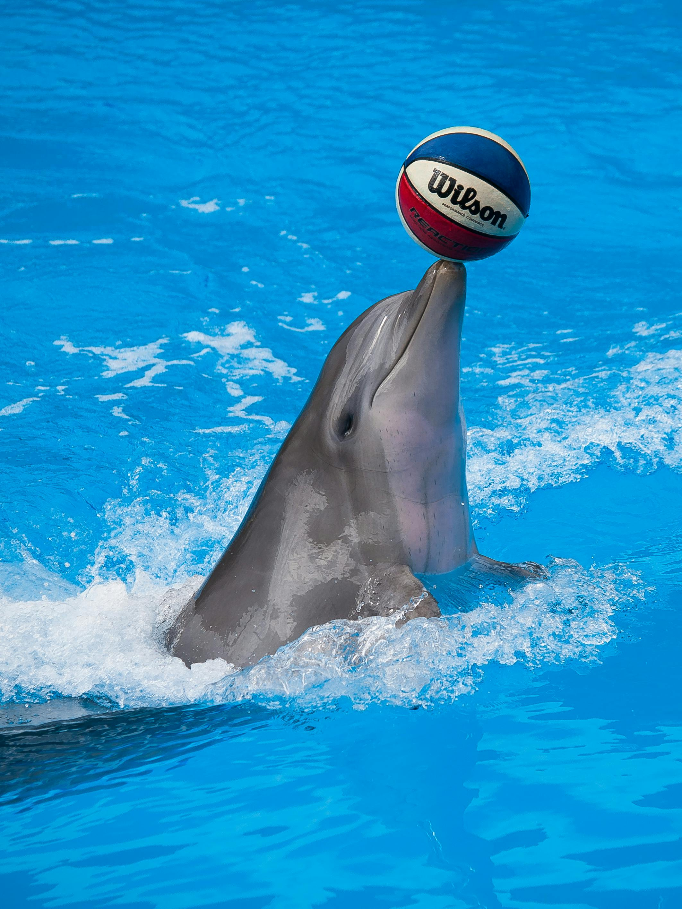

Dolphins are highly intelligent marine mammals and are part of the family of toothed whales that include orcas and pilot whales. They must surface to breathe air and give birth to live young. They are found worldwide, mostly in shallow seas of the continental shelves, and are carnivores, mostly eating fish and squid. Dolphin coloration varies, but they are generally gray in color with darker backs than the rest of their bodies. Currently around 40 species of dolphins have been recorded living in the ocean. Unlike some whale species, dolphins are not known for making long migration trips. Some species will migrate due to seasonal changes, but they don’t travel nearly as far as some whales do. Dolphins have an array of vocalisations such as clicks, whistles and squeals which they use for their well-developed communication and echolocation skills.
Dolphins are well known for their agility and playful behavior, making them a favorite of wildlife watchers. Many species will conserve energy by swimming alongside ships, a practice known as bow-riding. Dolphins also leap out of the water, spy-hop, and follow ships, often synchronizing their movements with one another. Dolphins live in social groups of five to several hundred. They use echolocation to find prey and often hunt together by surrounding a school of fish, trapping them and taking turns swimming through the resulting “bait ball” to catch fish. Dolphins will also follow seabirds, other whales and fishing boats to feed opportunistically on the fish they scare up or discard. Dolphins have also been known to help an injured dolphin by pushing it to the surface so it can breathe. Dolphins eat fish, squid and crustaceans. They do not chew their food but may break it into smaller pieces before swallowing.

Bottlenose dolphins can live at least 40 years, with some females outliving males at 60 years or more. They generally begin to reproduce when they are between 5 and 15 years old, with the exact age varying by population. Female bottlenose dolphins can reach sexual maturity before males. Females are pregnant for about 12 months and give birth, on average, every 3 to 6 years. Once calves are born, they nurse for 20 months or so and generally stay with their mothers for 3 to 6 years. Females as old as 45 have given birth. Bottlenose dolphins may breed throughout the year. However, certain breeding seasons have been observed and vary with location. Breeding seasons generally coincide with calving seasons Male and female bottlenose dolphins have multiple mates in a given reproductive season..